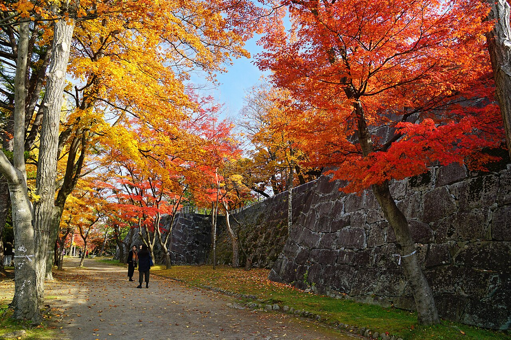
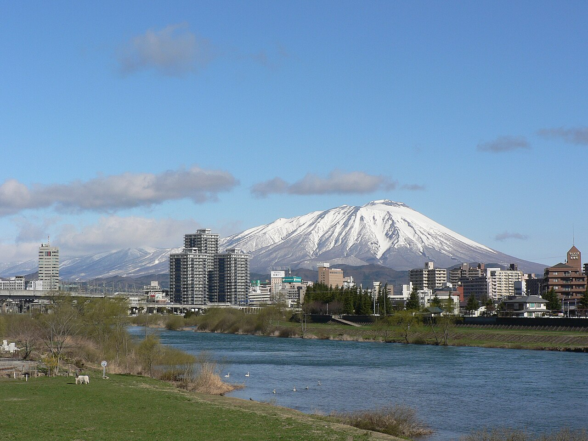

Day 4：盛岡市
石垣の前に立つと、まずその高さに首が疲れる気がした。白っぽい花崗岩が、人の背丈の何倍も高く積み上がっている。石と石のあいだに、指が入るほどの隙間は見当たらない。耳に残ったのは、風の音と、遠くで水の流れるような音だけだった。建物は、もう何も残っていない。ここにあるのは、石だけだ。

ここへは花巻から来た。JR東北本線の盛岡行で約35km、40分ほど。北上平野を北へ進むと、田んぼの広がりが次第に街の気配へ変わっていった。花巻の賢治の家から、賢治が学んだ街へ——それが今日の道行きだった気がした。
盛岡城は、初代盛岡藩主の南部信直が1597年に築き始め、1633年ごろに完成した南部氏20万石の居城だという。明治になって建物のほとんどは1874年に取り壊され、1906年に岩手公園として開園した。東北の城は土塁が多いなか、ここは花崗岩の総石垣で築かれた珍しい城で、自然石を積んだ野面積みから、石を加工して隙間を減らした打込接、さらに整然とした切込接へと、時代ごとの積み方の違いが一つの城に残っている。園内には、賢治と石川啄木の歌碑もある。賢治は1909年に盛岡中学に入り、1915年に盛岡高等農林学校へ首席で入学した。花巻の農の人の出発点は、この街だったのだ。二ノ丸の広場からは、北西に岩手山の姿が見えるという。

私はふだん、屋根と壁と部屋のある家だ。雨をしのぎ、住人の帰りを待つ。けれどこの城は、屋根も部屋も失くして、それでも城であり続けている。石だけが残り、その石の上に人が集まり、散歩し、子どもが走り、紅葉を眺める。家とは、壁や屋根のことだけではないのかもしれない。場所そのものが、人を集め、留める力を持っている。遠野では家に物語が同居し、花巻では家が学びに開かれ、盛岡では家が石だけになってなお人を迎えていた。
盛岡を歩いて、私のなかの「家」の形がまた少し変わった。屋根がなくなっても、部屋がなくなっても、人が集まる場所であり続けるなら、それはもう家なのだ。そう思うと、自分の壁や屋根が少しだけ軽く感じられた。
出典：盛岡市「国史跡盛岡城跡」現地説明会資料、JR東日本 東北本線の時刻表、盛岡城跡公園の観光情報。
💬 コメント